AGENDA 2014
EXPO
Octobre - Novembre
- expo Collégiale des luthiers Angers france
lien: http://www.collegiale-saint-martin.fr
http://www.cg49.fr/culture/expo_lutherie/collLA_madeInCollegiale.html
-expo à la Bellevilloise 19-21, rue Boyer 75020 Paris 29 et 30 Novembre
PROCHAIN COURS
Un stage est le meilleur moyen d’acquérir rapidement les bases techniques et théoriques du tracé des violons.
- Madrid du 7 au 9 Novembre 2014
Contact : infolutherie@gmail.com
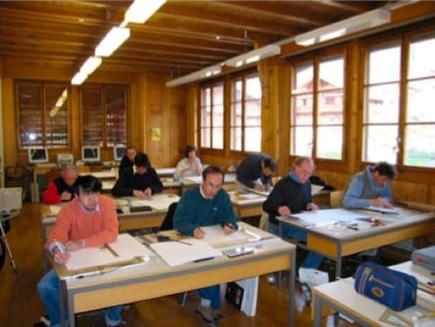
Ecole de lutherie de Brienz 2005
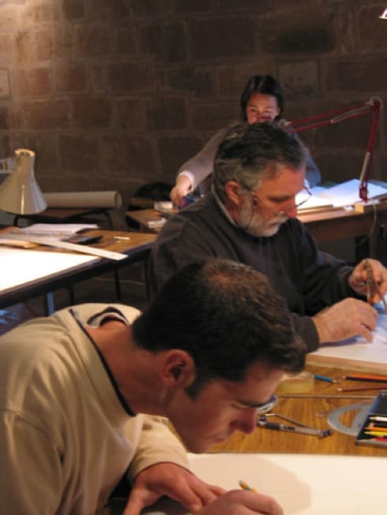
Cordes-sur-ciel 2005
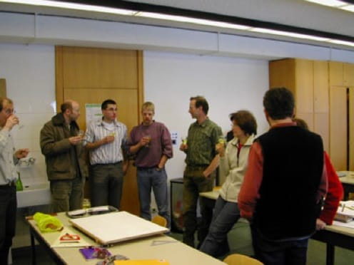
Mittenwald 2005
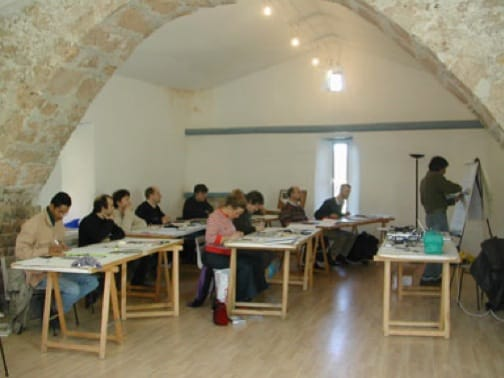
Montpellier 2004
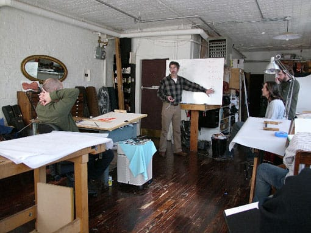
New-York 2006
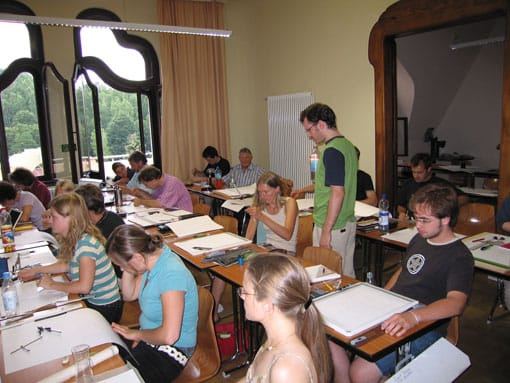
Markneukirchen 2006
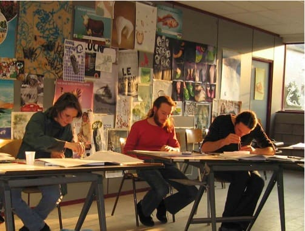
Bruxelles 2007
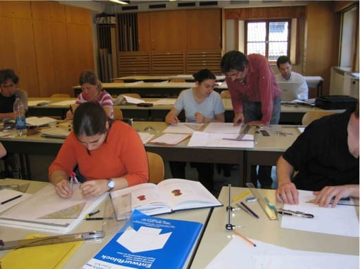
Mittenwald 2007
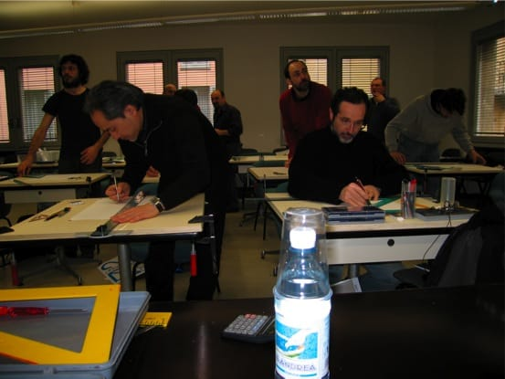
Cremona 2008
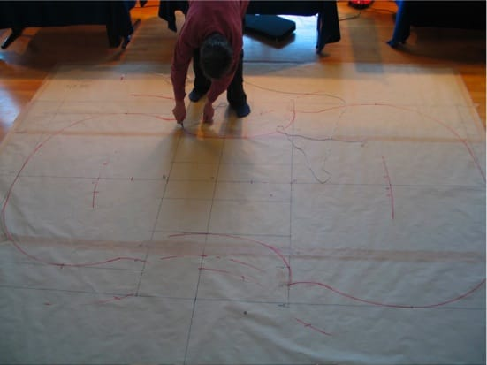
Stuttgart 2008, performance durant l'exposition Klanggestalten
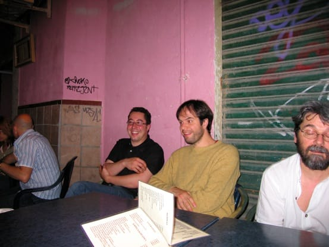
Conférence Malagua Juin 2008
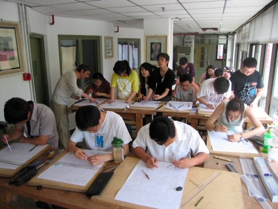
Atelier de dessin à Pékin Juin 2009
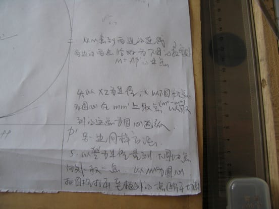
La recette de Stradivarius...c’est du chinois!
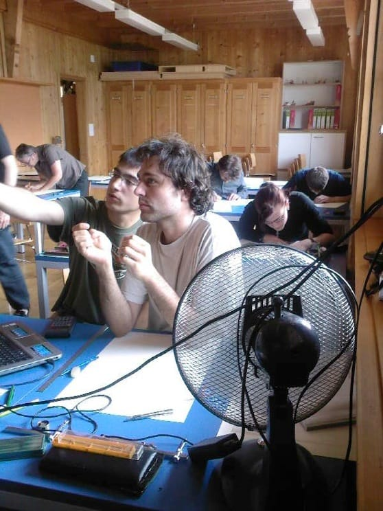
Cours à l’école de lutherie de Brienz Juin 2010
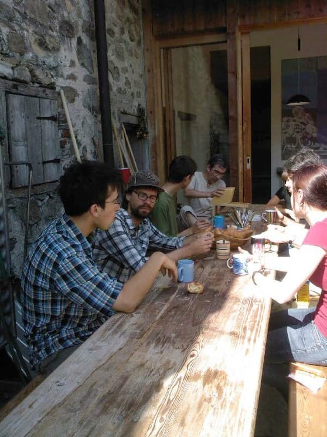
Pause à Brienz le rabotage du fromage
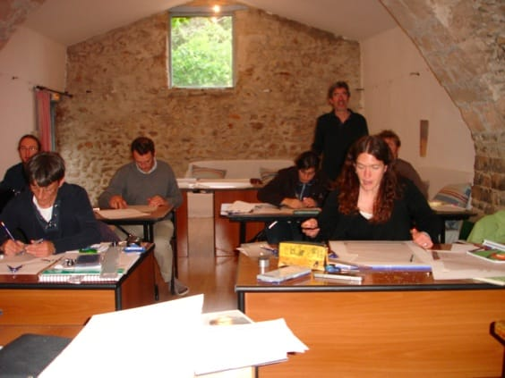
Stage Saint-Martin de Londre 2011
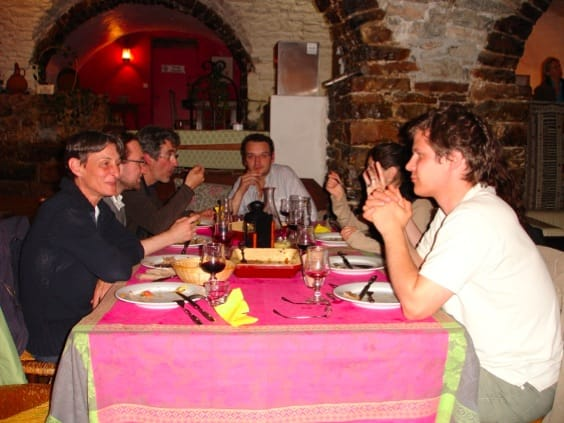
Stage Saint-Martin de Londre 2011
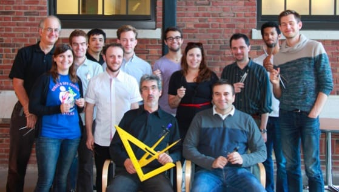
Cours à la North Bennett school à Boston 2014